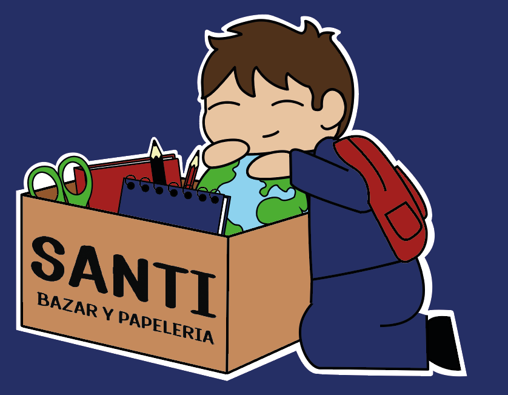

Así te tiemblen las manos
Ilustración para una historia que cuenta sobre una madre que debe dejar a su hijo e ir a trabajar a un lugar muy lejano para poder brindarle un mejor futuro a su niño.
Ilustración para una historia que cuenta sobre una madre que debe dejar a su hijo e ir a trabajar a un lugar muy lejano para poder brindarle un mejor futuro a su niño.

En esta historia se cuenta sobre un bebé no nacido, el cual fue abortado, y expresa lo triste que se siente por eso, pero aún así ama a su madre.

Esta ilustración cuenta la historia de un jóven que un día salió de su casa y no volvió debido a que tuvo un accidente en la madrugada.

Retratos de personas con mi estilo.

Puedo realizar ilustraciones más simples y tiernas, las cuales pueden ser utilizadas para stickers.

También hago ilustraciones para negocios, icluso para estampados.